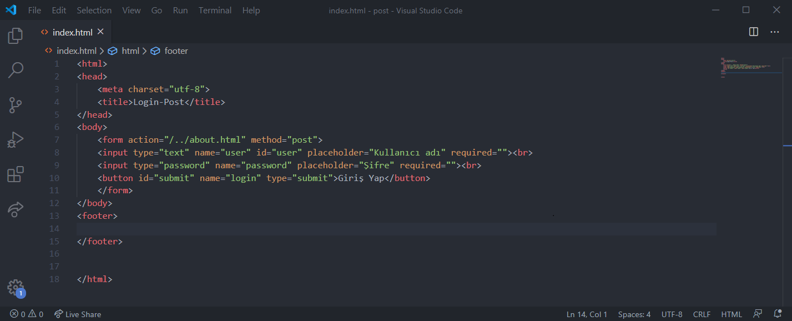
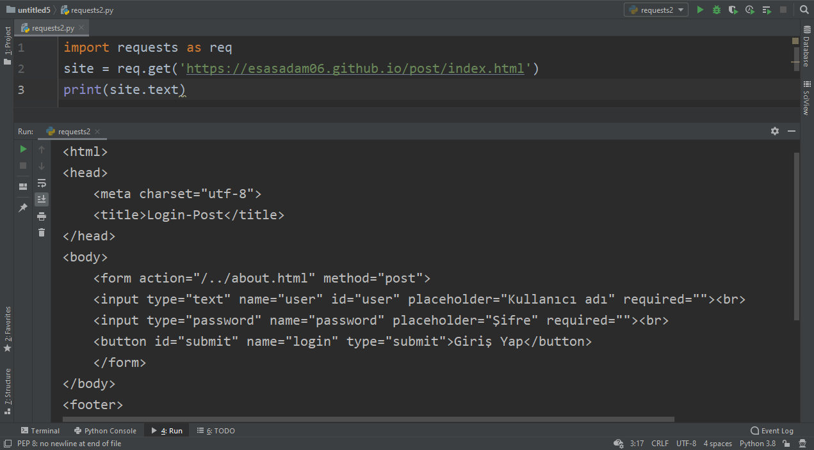
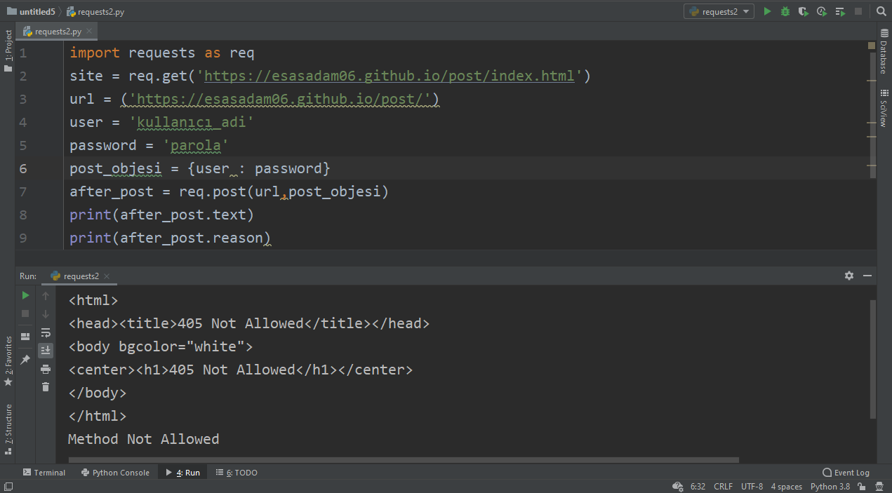
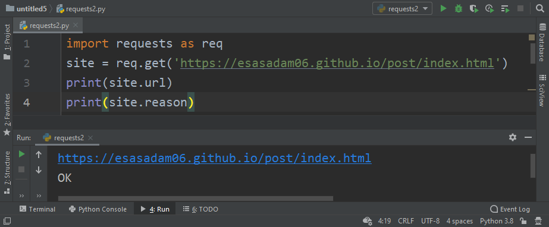
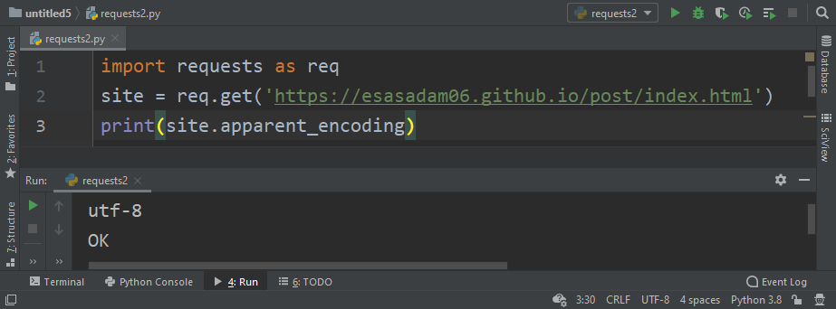

Python Requests Kütüphanesi
Requests kütüphanesi nedir, nasıl kullanılır?
Hangi metotlar(fonksiyonlar) ne amaçla kullanılır?
Requests metotları(fonksiyonları) nasıl kullanılır?
Merhabalar. Bu yazımda daha önce beautifulsoap4 kütüphanesi ile beraber incelediğimiz requests kütüphanesini incelemeye devam edeceğiz. Uygulamalı şekilde devam edeceğiz.
İlk olarak post metotunu kullanacağız.
Burada post işlemini kullandığımız bir form oluşturdum ve https://esasadam06.github.io/post/index.html sayfasına kaydettim. Bu forma bir giriş yapıldığında https://esasadam06.github.io/about.html adresine yönlendirileceğiz. Burada işimiz bitti.
import requests as req
site = req.get.(‘https://esasadam06.github.io/post/index.html’)
print(site.text)
Öncelikle kütüphanemizi ekliyoruz. Bir önceki yazımda kullandığım bir metot olan get metotu ile siteye dair bilgileri çekiyor ve bunları site adında ki değişkenimize atıyoruz. Kontrol amaçlı olarak sitenin source code’unu ekrana yazdırıyoruz. Gördüğünüz gibi yazdığımız html kodu aldık. Bu bağlantıyı sağladığımızı gösterir. Önceki yazımda bahsettiğimiz metotlardan da kısaca bahsettik ve başarılı bir şekilde bağlantı sağladığımıza göre devam edebiliriz.
Bu çıktıyı alınca bir anlam veremedim öncelikle açıkçası fakat daha sonra github.io üzerinde post metotunu kullanmamıza izin verilmediğini fark ettim fakat kodumuz çalışıyor başka bir platformda denedim. Bu konuda içiniz rahat olsun.
url = (‘https://esasadam06.github.io/post/’)
Öncelikle sitemizin url adresini url adında bir değişkene atadık. Burada atama yaparken index.html uzantısını vermedim. Yani bir şart olduğundan değil. Dizini verdiğimizde dizindeki index.html uzantısını kontrol edecektir. Aynı şekilde kullandığınız tarayıcıya bir uzantı yazdığınızda o uzantının index.html dosyasına bağlanacaktır.
user = ‘kullanıcı_adi’
password = ‘parola’
Kullanıcı adı ve şifreyi iki ayrı değişkene atadık.
post_objesi = {user : password}
Burada post_objesi adında bir değişkene user ve password değişkenlerini atadık. Bildiğimiz üzere python nesne yönelimli bir programlama dilidir. Oluşturduğumuz değişkenler de bizim atama işlemimize göre tip alır. Burada obje kelimesini özellikle kullandım yani. Hani kulağımıza fısıldanmış olsun.
after_post = req.post(url, post_objesi)
Requests kütüphanesinin post fonksiyonunu kullandık. Post fonksiyonu en az iki parametre alır. Post işleminin uygulanacağı url uzantısı ve post işlemi için kullanılacak data.
print(after_post.text)
Burada post işleminden elde ettiğimiz site verisinin source code’unu ekrana yazdırıyoruz. Gönründüğü gibi açılan sayfanın site bilgileri aldık. Fakat bizim belirttiğimiz gibi about.html sayfasına gitmedi.
print(after_post.reason)
Request kütüphanesinin reason metotu ile sebebini öğreniyoruz. Reason kelimesinin anlamı sebep. Sitenin açılmama sebebini veriyor bize.
print(site.url)
Url metotu ile siteler veya uzantılar arasında gezinirken hangi uzantıda olduğumuzu bilmemizi sağlayacaktır. Yani örneğin bir web sitesinde tarama yapıp ‘A’ bilgisinin olduğu sayfaları alacağız. Bu tarz işlemler için kullanabileceğimiz bir metot.
print(site.reason)
Reason metotu burada OK döndürdü yani herhangi bir hata mesajı almadık. Bu metotu da sitede tarama yaparken kullanabileceğimiz bir, hatta kullanmamız gereken bir metottur.
print(site.apparent_encoding)
Burada gördüğümüz gibi sitenin Unicode dönüşüm türünü döndürdü. Bildiğiniz üzere sitelerde ve veritabanlarında Unicode dönüşümünü sıkça kullanırız. Peki buradan dönen veri ne işimize yarayacak? Mesela bu sayfada utf-8 olduğundan dolayı bu sayfada Türkçe karakterleri de post işleminde kullanabiliriz herhangi bir bozulma veya sıkıntı yaşamayız bu konuda.
print(site.request)
print(after_post.request)
Bu metotumuz işlemimizin hangi requests metotu ile yapıldığının verisini verir. Burada site içinde after_post içinde bu metotu kullandım ve ikisininde çıktıları da farklı. Site çıktısı [GET] ama after_post çıktısı [POST]. Çünkü site değişkenine gelen site verileri get metotu ile gelmişti fakat after_post değişkenine gelen site verileri post metotu sonucu geldi.
Bu metotların yanı sıra status_code, ok, next gibi metotlara sahiptir. Bu metotları da kullanabilirsiniz. Requests kütüphanesi web üzerine çalışan arkadaşlar için aslında oldukça kolay ve kullanışlı bir kütüphane.